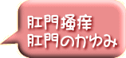

スマートフォン用サイトです
ＰＣの方はこちらをご覧下さい。
携帯の方はこちらをご覧ください。
| 人前では掻きたくても掻けないし、また掻けない状況にあるときに限って、容赦のない激しいかゆみに襲われたりします。デリケートゾーン専用のかゆみ止めを使ってもよくならず、勇気を出して医療機関を受診して塗り薬をもらっても薬が切れるとまたかゆみに襲われ･･･。 こんな経験をしている方も少なくないと思います。 肛門掻痒は、肛門周囲のかゆみの総称です。 痔核や痔瘻、真菌や回虫・蟯虫によるものなど原因は様々ですが、ここではそうした原因が見つからない慢性的な肛門の痒みについて取りあげます。 漢方では、痒み（かゆみ）を「風（ふう）」と考えます。 ｢風（ふう）」と言うのは、自然界で見る「風（かぜ）」です。自然界でも風が吹く場合は、必ずその原因があります。例えば、気圧や気温の差もそうですし、物体が動くときにも風が起こります。 身体の中でも同じで、かゆみである｢風（ふう）」が生じるにはそれなりの原因があるのです。 肛門掻痒（肛門のかゆみ）の場合は、「体内の不要な熱」や「湿（体に不必要な水分）」の発生や「血（けつ：からだ全体の器官を滋養する栄養物質。有形な物）」が不足する「血虚（けっきょ）」という状態になっているのが原因としてあげられます。 「体内の不要な熱」が原因ですと、肛門の灼熱感がありかゆみも激しくなります。ひどいと掻きすぎて出血する事もしばしばあるでしょうし、「湿（身体に不必要な水分）」が原因ですと、肛門のかゆみに伴って肛門が常に湿っているとか白くふやけているという事も見られるでしょう。 また、血虚（けっきょ）が原因ですと、皮膚の乾燥を伴う強いかゆみが見られるでしょう。 漢方では、こうした要らない熱や湿（身体に不必要な水分）、血虚（けっきょ）がどのような原因で生じているのかを調べ、その人の体質や症状に合わせた漢方薬を選んで治療します。 |
| 肛門掻痒・肛門のかゆみでよく使う漢方薬 |
| 竜胆瀉肝湯 | 6,600円 |
| 当帰飲子 | 7,100円 |
| 消風散 | 7,500円 |
| 温清飲 | 10,500円 |
| 黄連解毒湯 | 7,980円 |
| 防風通聖散 | 5,900円 |
| 黄連阿膠湯 | 12,000円 |
| これらは、ほんの一例です。 表示価格は、30日分の参考価格です。（税抜き価格です） 鼻臭症・臭鼻症の漢方治療は、体質によりこれらの薬と他の薬を組み合わせて使う場合が多くなりすので、一ヶ月分の価格は17,000円〜22,000円ぐらいです。 また食養生の厳守も必要です。 素人判断せず、必ず漢方の専門家にご相談の上ご使用ください。 |
| ★当店でご相談 但し、真剣に治そうと思って居られる方のみ、返信させて頂きます。 また「指定受信」など、迷惑メールを防止するため設定を解除の上で、メールをお送り下さい。 |


(C) Copyright 2015 Kanpo no SEISINDO. All rights reserved.